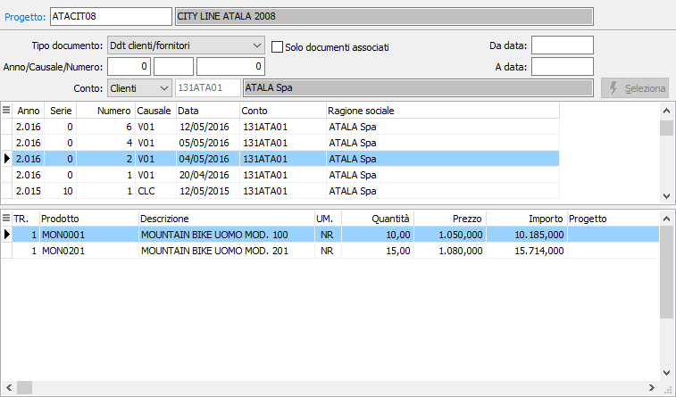

Associazione progetti/documenti
Il programma consente l’assegnazione dei documenti e dei movimenti di magazzino a singoli progetti.
Accedendo al programma, appare la seguente finestra video, impostando i parametri e lanciando la selezione appaiono due griglie: la prima contiene i documenti/movimenti, la seconda contiene il dettaglio delle righe di ciascun documento/movimento.
Nel caso in cui sia stata attivata l’opzione di gestione dei progetti sul rigo del documento, è possibile selezionare nella seconda griglia le singole righe per assegnarle al progetto corrente, altrimenti sarà possibile assegnare tutto il documento al progetto corrente selezionandolo nella prima griglia.

PROGETTO: Campo alfanumerico di 15 caratteri che indica il codice del progetto a cui si desidera assegnare i documenti/movimenti. Sul campo sono attive le funzioni di ricerca (F9), e manutenzione (CTRL+W) sulla tabella stessa.
TIPO DOCUMENTO: combo box su cui vengono riportati tutti i tipi di documento disponibili per la selezione. Valori ammessi: Ddt clienti/fornitori; Fatture clienti; Ordini clienti; Offerte clienti; Ddt acquisto; Fatture acquisto; Ordini fornitori; Movimenti di magazzino; Richieste di acquisto; Disposizioni; Ordini Terzisti; Ddt terzisti; Fatture terzisti; movimenti magazzino; movimenti magazzino di c/to lavoro.
SOLO DOCUMENTI ASSOCIATI: seleziona solo i documenti/movimenti già associati al progetto corrente, casella con segno di spunta.
ANNO/CAUSALE/NUMERO: I tre campi indicano l’anno, la causale, e il numero progressivo del documento che si desidera selezionare. Se per ogni campo non viene specificato alcun limite, la selezione includerà tutti i documenti validi nei limiti dei criteri di selezione successivi.
DA DATA: eventuale data di registrazione da cui far iniziare la selezione dei documenti. Confermando a vuoto, la selezione inizia dal primo documento/movimento valido.
A DATA: eventuale data di registrazione a cui deve terminare la selezione dei documenti. Confermando a vuoto, la selezione termina con l’ultimo documento/movimento valido.
TIPO CONTO: consente di selezionare la tipologia del conto da utilizzare come filtro per la lettura dei documenti ed influenza la tipologia del campo successivo; valori possibili: cliente, fornitore, tutti.
CONTO: indica il tipo e il codice del conto di cui si intende visualizzare i documenti. Viene proposto automaticamente il cliente intestatario del progetto.
Alla pressione del tasto Seleziona vengono visualizzati tutti i documenti che soddisfano i criteri di selezione impostati.
Sulle righe selezionate è possibile associare il codice del progetto corrente oppure togliere l’associazione al progetto corrente per poter successivamente procedere ad un nuovo aggiornamento.
La pressione del tasto F10 (o del bottone Salva) determina l’aggiornamento dei documenti/movimenti modificati e il contestuale aggiornamento dei movimenti di magazzino e delle giacenze articoli per progetto.